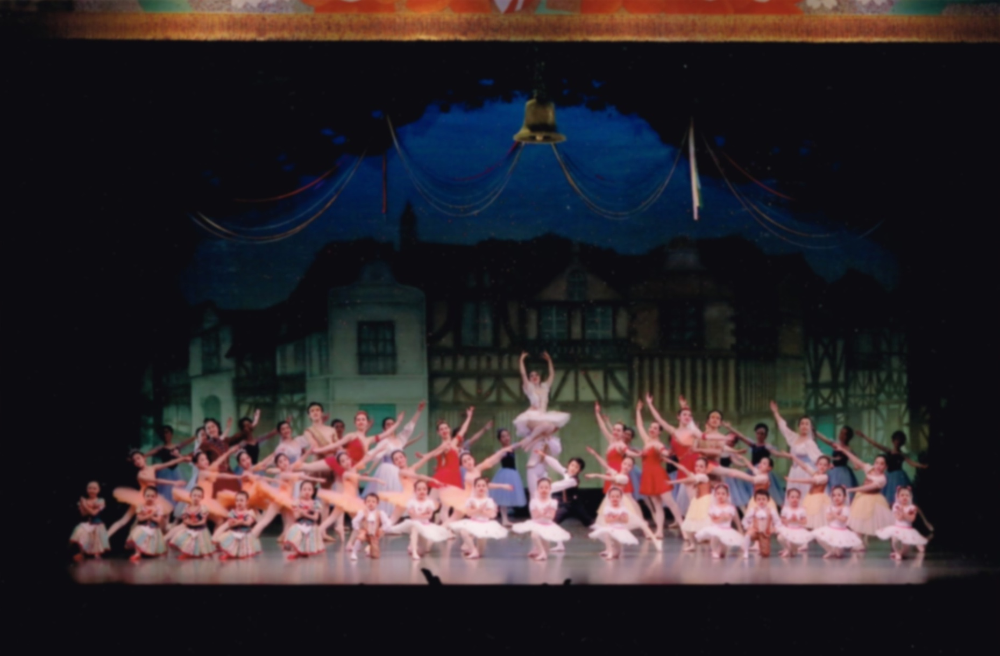

スワンバレエスタジオ
Swan Ballet
ホーム
スケジュール
料金
アクセス
フォトギャラリー
ホーム
スケジュール
料金
アクセス
フォトギャラリー
フォトギャラリー
今までの発表会の写真です！
個人情報保護と肖像権保護のためぼかしてあります。
無断転載・無断使用を固く禁じます。また、まとめサイト等への引用を厳禁いたします。
第20回発表会 2023年7月 30周年記念発表会
シンデレラ 時計の精
シンデレラ 舞踏会への出発
シンデレラ パ・ド・ドゥ
シンデレラ 舞踏会
シンデレラ 愛を込めて
カーテンコール
集合写真
ジゼルよりペサント・パ・ド・ドゥ
パ・ド・カトル
ラフィーユ・マル・ガルデよりパ・ド・ドゥ
スケートをする人々
海賊よりグラン・パ・ド・ドゥ
コッペリア3幕よりグラン・パ・ド・ドゥ
ゼンツアーノ花祭りグラン・パ・ド・ドゥ
第19回発表会 2021年6月
くるみ割り人形
くるみ割り人形
歌劇「ジョコンダ」より時の踊り
第18回発表会 2019年6月
白鳥の湖
白鳥の湖
ウィーンの調べ
第17回発表会 2017年6月
コッペリア

コッペリア
第16回発表会 2015年6月
ドン・キホーテ
夢の中で
バーアスティエクラス (ストレッチング ミューズクラス) タイタンズ
第15回発表会 2013年10月
くるみ割り人形
くるみ割り人形
第14回発表会 2012年5月
眠れる森の美女
ウィーンの調べ
バーアスティエクラス (ストレッチング ミューズクラス) リベルタンゴ
第13回発表会 2010年10月
シンデレラ
シンデレラ
歌劇「ジョコンダ」より時の踊り
第12回発表会 2009年5月
コッペリア
マチネ・ソワレ・ミュージカル
レ・シルフィード
第11回発表会 2007年11月
ドン・キホーテ
ドン・キホーテ
第10回発表会 2006年5月
くるみ割り人形